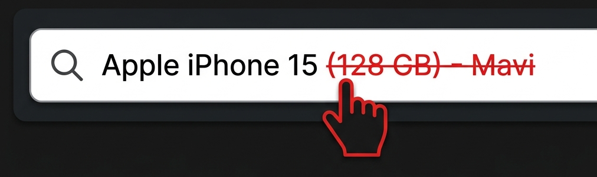

Akakçe'de İncele
Uzantı Ayarları
Aranan Kelimeyi Panoya Kopyala YENİ
Ürün tıklandığında veya kısayol tetiklendiğinde ürün başlığı otomatik olarak
panonuza kopyalanır.
Klavye Kısayolu YENİ
Sayfadaki ürünü hızlıca Akakçe'de incelemek için kısayol tuşu atayabilirsiniz.
Varsayılan kısayol Alt + A'dır.
Sağ Tık Menüsü
Herhangi bir metni seçip sağ tıklayarak "Akakçe'de Ara" seçeneğini göster.
Arama Kırpıcı YENİ
Akakçe arama çubuğundaki kelimeleri sağdan sola doğru tıklayıp silebilir, sola doğru
fareyle kayarak silinenleri geri yükleyebilirsiniz.

Silme: Tıklanan harf ve sağındakiler silinir (kırmızı önizleme).
Geri Yükleme: Sönük harflerin üzerine gelinerek kelimeler geri eklenir (yeşil önizleme).
Geri Yükleme: Sönük harflerin üzerine gelinerek kelimeler geri eklenir (yeşil önizleme).